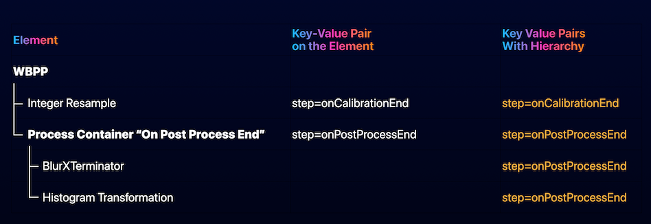

An extension for WBPP that enables fully customizable pipeline execution using a ProcessContainer object. [more]
Keywords: WBPP, ProcessContainer, Automation, Script Execution, PixInsight, Pipeline Builder
[hide]
[hide]
This extension allows users to define the complete WBPP pipeline through a standard PixInsight ProcessContainer, which acts as a programmable execution list. Each process inside the container is dynamically assigned to a WBPP pipeline stage.
The WBPP No Code Pipeline Builder is designed for users who want to extend WBPP without coding. It leverages a hierarchy of key=value metadata tags to define when and on which groups a process should run, without editing the WBPP core logic.
This method offers full control over the execution order and group targeting while making the pipeline fully visible and editable using PixInsight's graphical tools.
[hide]
The user creates a ProcessContainer instance. Inside this process container, any number of processes can be added, including other nested ProcessContainer elements.
Processes will only be executed if at least the step tag is present either on the process level or at a parent level (e.g. on the main process container).
Each element must declare its intent through a step tag and optional filtering metadata like cam, filter, binning, etc. - any of the user defined keywords from the WBPP instance.
Once happy with the process, the user saves the ProcessContainer instance as a process icon (by dragging the triangle of the ProcessContainer to the PixInsight desktop. This icon must then be renamed tp WBPP - either by clicking the letter N in the top right corner of the process icon, or by right-clicking the process icon and selecting Set Icon Identifier.
Please note that once the icon is created for the Process Container instance, its content may not be modified. If a modification is needed, double-click the Process Icon, do the required changes and save it as a new process icon by dragging the blue triangle to the desktop.
Only one process icon may be present with the identifier WBPP - the old one must be renamed or deleted.
To find out more about ProcessContainers, click here: Legacy ProcessContainer documentation.
Key concepts of the No Code Pipeline Builder:
Processes are applied to each matching group and master variant (regular, drizzle, autocrop) in sequence.
[hide]
Metadata placed on a container will be inherited by all its children, unless a child overrides it.
Keyword hierarchy/inheritance rules
[hide]
These are the valid step values:
Wherever it is not specified that the step is always executed, steps are conditional based on whether the related step is enabled in WBPP.
[hide]
In addition to step, any number of custom keys can be added to filter matching groups. Examples include:
A process will be applied only to groups that satisfy all specified conditions. Please note that the above examples are referring to keywords defined by the user in the WBPP Keywords section.
[hide]
This makes it easy to apply the same filter to multiple operations while retaining flexibility for exceptions.
[hide]
An example of a WBPP ProcessContainer defining multiple steps with filtering tags.
A container with multiple elements:
This will apply resampling on every single sub after the calibration step has finished. It will then apply BlurXTerminator, NoiseXTerminator and an autostretch on every master frame generated.
[hide]
Examples of practical applications:
[hide]
Copyright © (c) 2025 Luca Bartek, Roberto Sartori